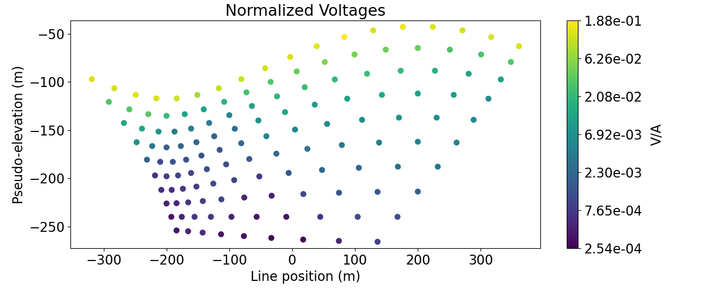
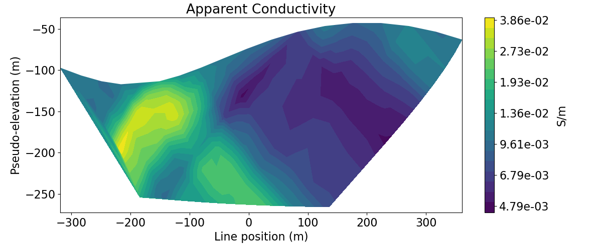

Note
Click here to download the full example code
2.5D DC Resistivity Inversion with Sparse Norms¶
Here we invert a line of DC resistivity data to recover an electrical conductivity model. We formulate the inverse problem as a least-squares optimization problem. For this tutorial, we focus on the following:
Defining the survey
Generating a mesh based on survey geometry
Including surface topography
Defining the inverse problem (data misfit, regularization, directives)
Applying sensitivity weighting
Plotting the recovered model and data misfit
Import modules¶
import os
import numpy as np
import matplotlib as mpl
import matplotlib.pyplot as plt
from matplotlib.colors import LogNorm
import tarfile
from discretize import TreeMesh
from discretize.utils import mkvc, refine_tree_xyz
from SimPEG.utils import surface2ind_topo, model_builder
from SimPEG import (
maps,
data,
data_misfit,
regularization,
optimization,
inverse_problem,
inversion,
directives,
utils,
)
from SimPEG.electromagnetics.static import resistivity as dc
from SimPEG.electromagnetics.static.utils.static_utils import (
plot_pseudosection,
apparent_resistivity_from_voltage,
)
from SimPEG.utils.io_utils.io_utils_electromagnetics import read_dcip2d_ubc
try:
from pymatsolver import Pardiso as Solver
except ImportError:
from SimPEG import SolverLU as Solver
mpl.rcParams.update({"font.size": 16})
# sphinx_gallery_thumbnail_number = 3
Define File Names¶
Here we provide the file paths to assets we need to run the inversion. The path to the true model conductivity and chargeability models are also provided for comparison with the inversion results. These files are stored as a tar-file on our google cloud bucket: “https://storage.googleapis.com/simpeg/doc-assets/dcr2d.tar.gz”
# storage bucket where we have the data
data_source = "https://storage.googleapis.com/simpeg/doc-assets/dcr2d.tar.gz"
# download the data
downloaded_data = utils.download(data_source, overwrite=True)
# unzip the tarfile
tar = tarfile.open(downloaded_data, "r")
tar.extractall()
tar.close()
# path to the directory containing our data
dir_path = downloaded_data.split(".")[0] + os.path.sep
# files to work with
topo_filename = dir_path + "topo_xyz.txt"
data_filename = dir_path + "dc_data.obs"
Out:
overwriting /home/vsts/work/1/s/tutorials/05-dcr/dcr2d.tar.gz
Downloading https://storage.googleapis.com/simpeg/doc-assets/dcr2d.tar.gz
saved to: /home/vsts/work/1/s/tutorials/05-dcr/dcr2d.tar.gz
Download completed!
Load Data, Define Survey and Plot¶
Here we load the observed data, define the DC and IP survey geometry and plot the data values using pseudo-sections. Warning: In the following example, the observations file is assumed to be sorted by sources
# Load data
topo_xyz = np.loadtxt(str(topo_filename))
dc_data = read_dcip2d_ubc(data_filename, "volt", "general")
Plot Observed Data in Pseudo-Section¶
Here, we demonstrate how to plot 2D data in pseudo-section. First, we plot the actual data (voltages) in pseudo-section as a scatter plot. This allows us to visualize the pseudo-sensitivity locations for our survey. Next, we plot the data as apparent conductivities in pseudo-section with a filled contour plot.
# Plot voltages pseudo-section
fig = plt.figure(figsize=(12, 5))
ax1 = fig.add_axes([0.1, 0.15, 0.75, 0.78])
plot_pseudosection(
dc_data,
plot_type="scatter",
ax=ax1,
scale="log",
cbar_label="V/A",
scatter_opts={"cmap": mpl.cm.viridis},
)
ax1.set_title("Normalized Voltages")
plt.show()
# Get apparent conductivities from volts and survey geometry
apparent_conductivities = 1 / apparent_resistivity_from_voltage(
dc_data.survey, dc_data.dobs
)
# Plot apparent conductivity pseudo-section
fig = plt.figure(figsize=(12, 5))
ax1 = fig.add_axes([0.1, 0.15, 0.75, 0.78])
plot_pseudosection(
dc_data.survey,
apparent_conductivities,
plot_type="contourf",
ax=ax1,
scale="log",
cbar_label="S/m",
mask_topography=True,
contourf_opts={"levels": 20, "cmap": mpl.cm.viridis},
)
ax1.set_title("Apparent Conductivity")
plt.show()
- 
- 
Assign Uncertainties¶
Inversion with SimPEG requires that we define the uncertainties on our data. This represents our estimate of the standard deviation of the noise in our data. For DC data, the uncertainties are 10% of the absolute value.
Create Tree Mesh¶
Here, we create the Tree mesh that will be used invert the DC data
dh = 4 # base cell width
dom_width_x = 3200.0 # domain width x
dom_width_z = 2400.0 # domain width z
nbcx = 2 ** int(np.round(np.log(dom_width_x / dh) / np.log(2.0))) # num. base cells x
nbcz = 2 ** int(np.round(np.log(dom_width_z / dh) / np.log(2.0))) # num. base cells z
# Define the base mesh
hx = [(dh, nbcx)]
hz = [(dh, nbcz)]
mesh = TreeMesh([hx, hz], x0="CN")
# Mesh refinement based on topography
mesh = refine_tree_xyz(
mesh,
topo_xyz[:, [0, 2]],
octree_levels=[0, 0, 4, 4],
method="surface",
finalize=False,
)
# Mesh refinement near transmitters and receivers. First we need to obtain the
# set of unique electrode locations.
electrode_locations = np.c_[
dc_data.survey.locations_a,
dc_data.survey.locations_b,
dc_data.survey.locations_m,
dc_data.survey.locations_n,
]
unique_locations = np.unique(
np.reshape(electrode_locations, (4 * dc_data.survey.nD, 2)), axis=0
)
mesh = refine_tree_xyz(
mesh, unique_locations, octree_levels=[4, 4], method="radial", finalize=False
)
# Refine core mesh region
xp, zp = np.meshgrid([-600.0, 600.0], [-400.0, 0.0])
xyz = np.c_[mkvc(xp), mkvc(zp)]
mesh = refine_tree_xyz(
mesh, xyz, octree_levels=[0, 0, 2, 8], method="box", finalize=False
)
mesh.finalize()
Out:
/usr/share/miniconda/envs/deploy/lib/python3.7/site-packages/scipy/interpolate/interpolate.py:623: RuntimeWarning:
invalid value encountered in true_divide
Project Surveys to Discretized Topography¶
It is important that electrodes are not model as being in the air. Even if the electrodes are properly located along surface topography, they may lie above the discretized topography. This step is carried out to ensure all electrodes like on the discretized surface.
# Create 2D topography. Since our 3D topography only changes in the x direction,
# it is easy to define the 2D topography projected along the survey line. For
# arbitrary topography and for an arbitrary survey orientation, the user must
# define the 2D topography along the survey line.
topo_2d = np.unique(topo_xyz[:, [0, 2]], axis=0)
# Find cells that lie below surface topography
ind_active = surface2ind_topo(mesh, topo_2d)
# Extract survey from data object
survey = dc_data.survey
# Shift electrodes to the surface of discretized topography
survey.drape_electrodes_on_topography(mesh, ind_active, option="top")
# Reset survey in data object
dc_data.survey = survey
Starting/Reference Model and Mapping on Tree Mesh¶
Here, we would create starting and/or reference models for the DC inversion as well as the mapping from the model space to the active cells. Starting and reference models can be a constant background value or contain a-priori structures. Here, the starting model is the natural log of 0.01 S/m.
# Define conductivity model in S/m (or resistivity model in Ohm m)
air_conductivity = np.log(1e-8)
background_conductivity = np.log(1e-2)
active_map = maps.InjectActiveCells(mesh, ind_active, np.exp(air_conductivity))
nC = int(ind_active.sum())
conductivity_map = active_map * maps.ExpMap()
# Define model
starting_conductivity_model = background_conductivity * np.ones(nC)
Define the Physics of the DC Simulation¶
Here, we define the physics of the DC resistivity problem.
# Define the problem. Define the cells below topography and the mapping
simulation = dc.simulation_2d.Simulation2DNodal(
mesh, survey=survey, sigmaMap=conductivity_map, Solver=Solver
)
Out:
/home/vsts/work/1/s/SimPEG/utils/code_utils.py:413: FutureWarning:
Solver has been deprecated, please use simulation.solver. It will be removed in version 0.16.0 of SimPEG.
/home/vsts/work/1/s/SimPEG/utils/code_utils.py:420: FutureWarning:
Solver has been deprecated, please use simulation.solver. It will be removed in version 0.16.0 of SimPEG.
Define DC Inverse Problem¶
The inverse problem is defined by 3 things:
Data Misfit: a measure of how well our recovered model explains the field data
Regularization: constraints placed on the recovered model and a priori information
Optimization: the numerical approach used to solve the inverse problem
# Define the data misfit. Here the data misfit is the L2 norm of the weighted
# residual between the observed data and the data predicted for a given model.
# Within the data misfit, the residual between predicted and observed data are
# normalized by the data's standard deviation.
dmis = data_misfit.L2DataMisfit(data=dc_data, simulation=simulation)
# Define the regularization (model objective function). Here, 'p' defines the
# the norm of the smallness term, 'qx' defines the norm of the smoothness
# in x and 'qz' defines the norm of the smoothness in z.
regmap = maps.IdentityMap(nP=int(ind_active.sum()))
reg = regularization.Sparse(
mesh,
indActive=ind_active,
mref=starting_conductivity_model,
mapping=regmap,
gradientType="total",
alpha_s=0.01,
alpha_x=1,
alpha_y=1,
)
reg.mrefInSmooth = True # Include reference model in smoothness
p = 0
qx = 1
qz = 1
reg.norms = np.c_[p, qx, qz]
# Define how the optimization problem is solved. Here we will use an inexact
# Gauss-Newton approach.
opt = optimization.InexactGaussNewton(maxIter=40)
# Here we define the inverse problem that is to be solved
inv_prob = inverse_problem.BaseInvProblem(dmis, reg, opt)
Define DC Inversion Directives¶
Here we define any directives that are carried out during the inversion. This includes the cooling schedule for the trade-off parameter (beta), stopping criteria for the inversion and saving inversion results at each iteration.
# Apply and update sensitivity weighting as the model updates
update_sensitivity_weighting = directives.UpdateSensitivityWeights()
# Reach target misfit for L2 solution, then use IRLS until model stops changing.
update_IRLS = directives.Update_IRLS(
max_irls_iterations=25, minGNiter=1, chifact_start=1.0
)
# Defining a starting value for the trade-off parameter (beta) between the data
# misfit and the regularization.
starting_beta = directives.BetaEstimate_ByEig(beta0_ratio=1e1)
# Options for outputting recovered models and predicted data for each beta.
save_iteration = directives.SaveOutputEveryIteration(save_txt=False)
# Update preconditioner
update_jacobi = directives.UpdatePreconditioner()
directives_list = [
update_sensitivity_weighting,
update_IRLS,
starting_beta,
save_iteration,
update_jacobi,
]
Running the DC Inversion¶
To define the inversion object, we need to define the inversion problem and the set of directives. We can then run the inversion.
# Here we combine the inverse problem and the set of directives
dc_inversion = inversion.BaseInversion(inv_prob, directiveList=directives_list)
# Run inversion
recovered_conductivity_model = dc_inversion.run(starting_conductivity_model)
Out:
SimPEG.InvProblem is setting bfgsH0 to the inverse of the eval2Deriv.
***Done using same Solver and solverOpts as the problem***
model has any nan: 0
============================ Inexact Gauss Newton ============================
# beta phi_d phi_m f |proj(x-g)-x| LS Comment
-----------------------------------------------------------------------------
x0 has any nan: 0
0 2.84e+03 1.58e+04 0.00e+00 1.58e+04 3.00e+03 0
1 1.42e+03 8.69e+02 2.82e-01 1.27e+03 3.12e+02 0
2 7.11e+02 1.58e+02 4.58e-01 4.84e+02 6.32e+01 0 Skip BFGS
3 3.56e+02 7.73e+01 5.31e-01 2.66e+02 2.85e+01 0 Skip BFGS
Reached starting chifact with l2-norm regularization: Start IRLS steps...
eps_p: 2.3594361922397122 eps_q: 2.3594361922397122
4 1.78e+02 4.60e+01 7.76e-01 1.84e+02 1.37e+01 0 Skip BFGS
5 3.70e+02 3.11e+01 8.93e-01 3.62e+02 2.90e+01 0 Skip BFGS
6 5.80e+02 5.96e+01 8.37e-01 5.45e+02 3.05e+01 0
7 4.14e+02 9.95e+01 7.81e-01 4.23e+02 2.17e+01 0
8 4.14e+02 7.24e+01 8.72e-01 4.34e+02 8.95e+00 0
9 3.39e+02 7.63e+01 9.10e-01 3.85e+02 8.57e+00 0
10 3.39e+02 6.69e+01 9.83e-01 4.00e+02 9.38e+00 0
11 3.39e+02 7.22e+01 1.02e+00 4.17e+02 8.77e+00 0
12 2.76e+02 7.65e+01 1.05e+00 3.66e+02 8.68e+00 0
13 2.76e+02 6.72e+01 1.11e+00 3.74e+02 9.71e+00 0
14 2.76e+02 7.06e+01 1.13e+00 3.82e+02 9.06e+00 0
15 2.76e+02 7.30e+01 1.14e+00 3.89e+02 1.05e+01 0 Skip BFGS
16 2.27e+02 7.55e+01 1.15e+00 3.37e+02 9.50e+00 0
17 2.27e+02 6.51e+01 1.20e+00 3.38e+02 1.07e+01 0
18 2.27e+02 6.57e+01 1.21e+00 3.42e+02 8.96e+00 0
19 2.27e+02 6.63e+01 1.22e+00 3.44e+02 9.99e+00 0 Skip BFGS
20 2.27e+02 6.72e+01 1.23e+00 3.46e+02 1.01e+01 0 Skip BFGS
21 2.27e+02 6.78e+01 1.23e+00 3.47e+02 1.07e+01 0
22 2.27e+02 6.86e+01 1.22e+00 3.47e+02 1.14e+01 0
23 2.27e+02 6.90e+01 1.22e+00 3.46e+02 1.19e+01 0
24 2.27e+02 6.93e+01 1.21e+00 3.45e+02 1.30e+01 0
25 2.27e+02 6.95e+01 1.21e+00 3.44e+02 1.35e+01 0
26 2.27e+02 6.97e+01 1.20e+00 3.42e+02 1.53e+01 0
27 2.27e+02 6.97e+01 1.19e+00 3.41e+02 1.59e+01 0
28 2.27e+02 6.97e+01 1.19e+00 3.39e+02 1.32e+01 0
Reach maximum number of IRLS cycles: 25
------------------------- STOP! -------------------------
1 : |fc-fOld| = 0.0000e+00 <= tolF*(1+|f0|) = 1.5820e+03
1 : |xc-x_last| = 7.6744e-01 <= tolX*(1+|x0|) = 3.1119e+01
0 : |proj(x-g)-x| = 1.3216e+01 <= tolG = 1.0000e-01
0 : |proj(x-g)-x| = 1.3216e+01 <= 1e3*eps = 1.0000e-02
0 : maxIter = 40 <= iter = 29
------------------------- DONE! -------------------------
Recreate True Conductivity Model¶
true_background_conductivity = 1e-2
true_conductor_conductivity = 1e-1
true_resistor_conductivity = 1e-3
true_conductivity_model = true_background_conductivity * np.ones(len(mesh))
ind_conductor = model_builder.getIndicesSphere(np.r_[-120.0, -180.0], 60.0, mesh.gridCC)
true_conductivity_model[ind_conductor] = true_conductor_conductivity
ind_resistor = model_builder.getIndicesSphere(np.r_[120.0, -180.0], 60.0, mesh.gridCC)
true_conductivity_model[ind_resistor] = true_resistor_conductivity
true_conductivity_model[~ind_active] = np.NaN
Plotting True and Recovered Conductivity Model¶
# Get L2 and sparse recovered model in base 10
l2_conductivity = conductivity_map * inv_prob.l2model
l2_conductivity[~ind_active] = np.NaN
recovered_conductivity = conductivity_map * recovered_conductivity_model
recovered_conductivity[~ind_active] = np.NaN
# Plot True Model
norm = LogNorm(vmin=1e-3, vmax=1e-1)
fig = plt.figure(figsize=(9, 15))
ax1 = 3 * [None]
ax2 = 3 * [None]
title_str = [
"True Conductivity Model",
"Smooth Recovered Model",
"Sparse Recovered Model",
]
plotting_model = [
true_conductivity_model,
l2_conductivity,
recovered_conductivity,
]
for ii in range(0, 3):
ax1[ii] = fig.add_axes([0.14, 0.75 - 0.3 * ii, 0.68, 0.2])
mesh.plot_image(
plotting_model[ii],
ax=ax1[ii],
grid=False,
range_x=[-700, 700],
range_y=[-600, 0],
pcolor_opts={"norm": norm},
)
ax1[ii].set_xlim(-600, 600)
ax1[ii].set_ylim(-600, 0)
ax1[ii].set_title(title_str[ii])
ax1[ii].set_xlabel("x (m)")
ax1[ii].set_ylabel("z (m)")
ax2[ii] = fig.add_axes([0.84, 0.75 - 0.3 * ii, 0.03, 0.2])
cbar = mpl.colorbar.ColorbarBase(ax2[ii], norm=norm, orientation="vertical")
cbar.set_label(r"$\sigma$ (S/m)", rotation=270, labelpad=15, size=12)
plt.show()
Plotting Predicted DC Data and Misfit¶
# Predicted data from recovered model
dpred = inv_prob.dpred
dobs = dc_data.dobs
std = dc_data.standard_deviation
# Plot
fig = plt.figure(figsize=(9, 13))
data_array = [np.abs(dobs), np.abs(dpred), (dobs - dpred) / std]
plot_title = ["Observed Voltage", "Predicted Voltage", "Normalized Misfit"]
plot_units = ["V/A", "V/A", ""]
scale = ["log", "log", "linear"]
ax1 = 3 * [None]
cax1 = 3 * [None]
cbar = 3 * [None]
cplot = 3 * [None]
for ii in range(0, 3):
ax1[ii] = fig.add_axes([0.15, 0.72 - 0.33 * ii, 0.65, 0.21])
cax1[ii] = fig.add_axes([0.81, 0.72 - 0.33 * ii, 0.03, 0.21])
cplot[ii] = plot_pseudosection(
survey,
data_array[ii],
"contourf",
ax=ax1[ii],
cax=cax1[ii],
scale=scale[ii],
cbar_label=plot_units[ii],
mask_topography=True,
contourf_opts={"levels": 25, "cmap": mpl.cm.viridis},
)
ax1[ii].set_title(plot_title[ii])
plt.show()
Total running time of the script: ( 3 minutes 5.776 seconds)
Estimated memory usage: 10 MB